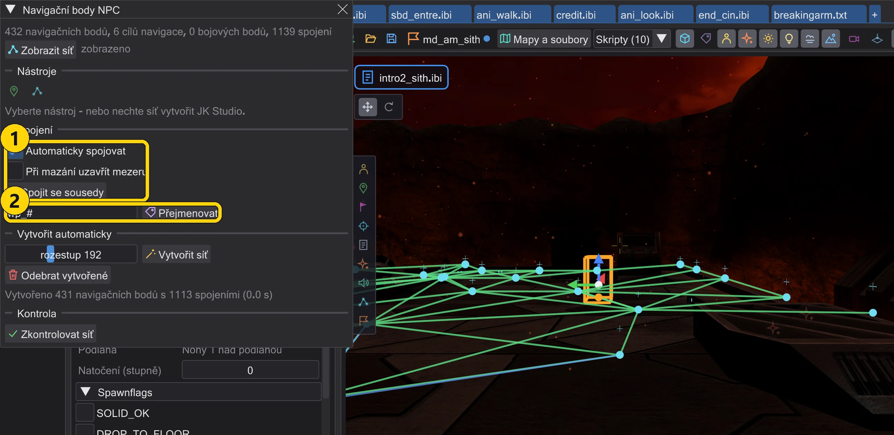
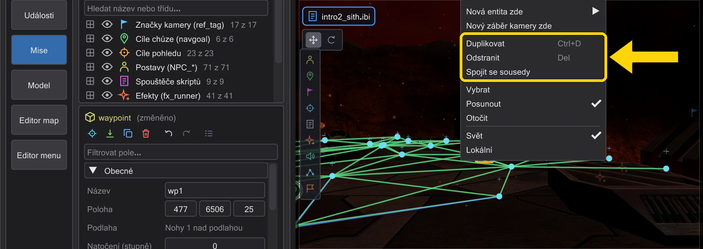
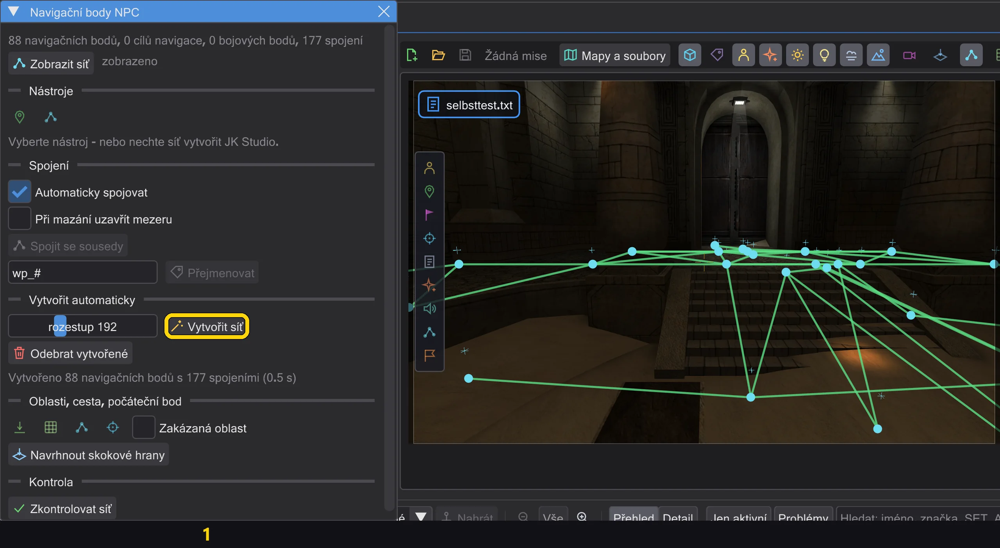
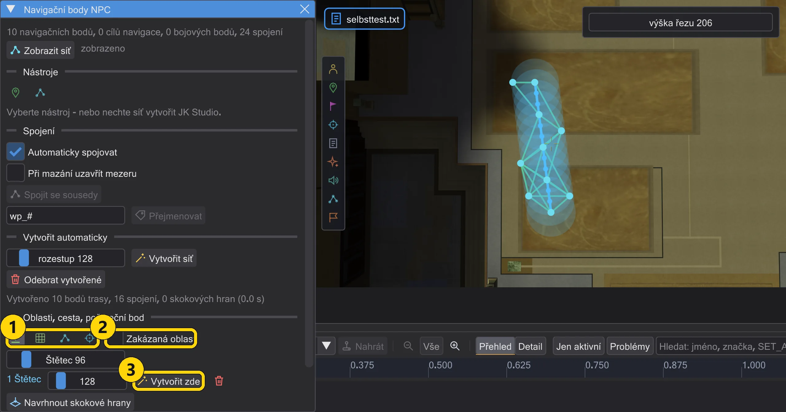
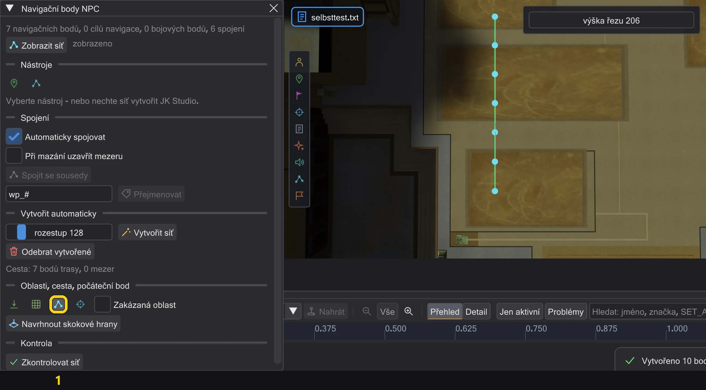
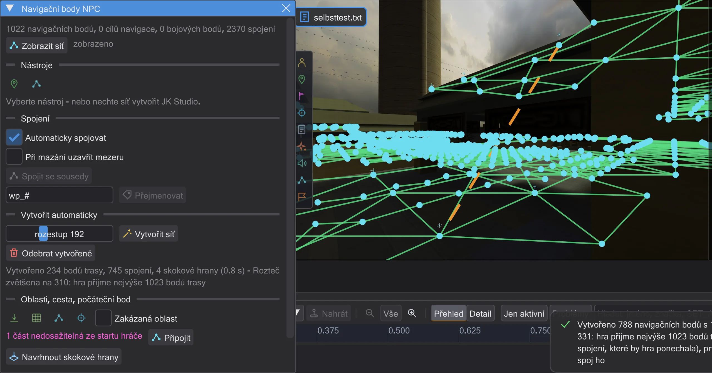
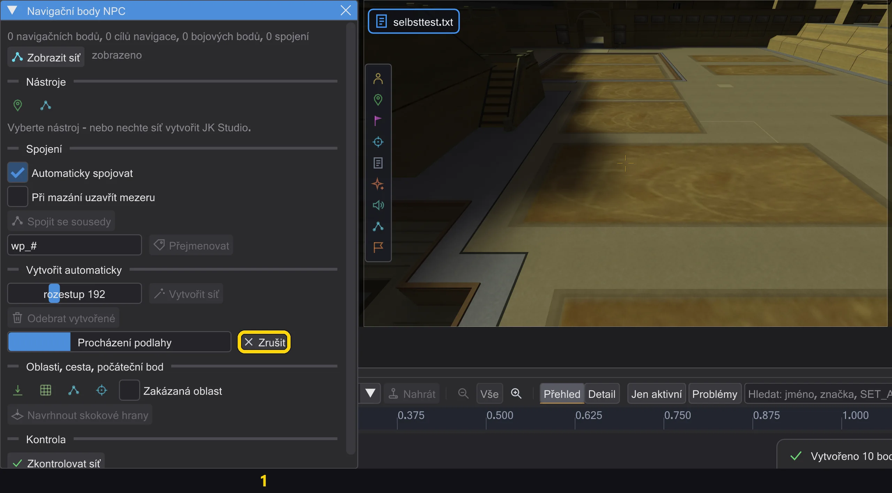
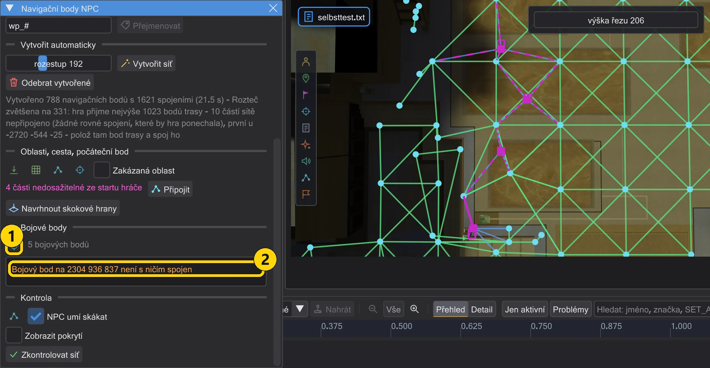
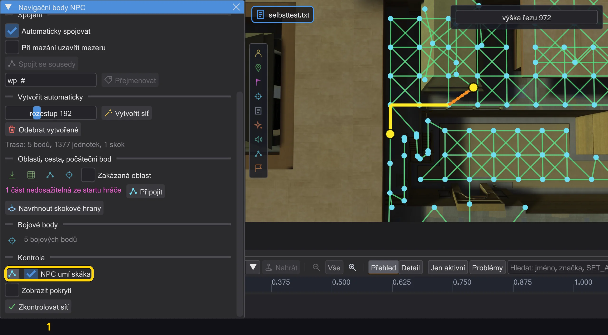
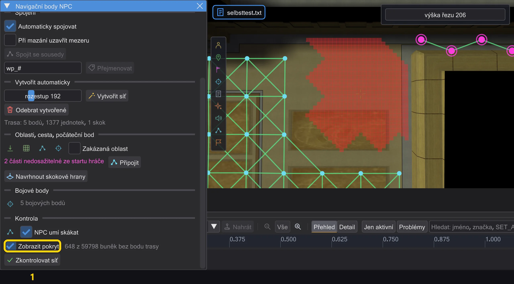

Mapa a scéna
Navigační body NPC
Síť, po které NPC chodí - k vzdáleným cílům chůze v animačních sekvencích a když pronásledují nebo prchají. Umístěte ji ručně nebo ji nechte postavit program a pak ji zkontrolujte.

| Č. | Název | Co dělá |
|---|---|---|
| 1 | Zobrazit síť | Zobrazí síť v mapě. |
| 2 | Umístit navigační body / Spojit | Umisťování bodů kliknutím na podlahu / spojení dvou bodů. |
| 3 | Vytvořit síť / Odebrat vytvořené | Rozprostřít síť po pochozí podlaze / odebrat vytvořené. |
| 4 | Zkontrolovat síť | Najde, co by hra odmítla; kliknutím na problém tam přeletíte. |
Otevřete ho pomocí Navigační body NPC na liště mapy. Zobrazit síť kreslí cesty: zeleně ručně nastavené (target), modře automatické (cíle navigace a bojové body), oranžově skoky (targetJump).
- Umístit navigační body: klikněte na podlahu - každý nový bod se spojí s předchozím. Shift+kliknutí začne novou cestu, Esc ukončí.
- Spojit: kliknutím na dva body je spojíte (Ctrl: skok); kliknutí na dva spojené body je rozpojí. Bod má nejvýš čtyři spojení.
- Vytvořit síť rozprostře navigační body po pochozí podlaze (rozestup: původní úrovně používají asi 230) a spojí je - jeden krok zpět. Odebrat vytvořené odebere jen ty, ručně umístěné zůstanou.
- Zkontrolovat síť najde, co by hra odmítla nebo co NPC nemohou použít; kliknutím na problém tam přeletíte.
Mazání, automatické spojování, duplikování#

| Č. | Název | Co dělá |
|---|---|---|
| 1 | Automaticky spojovat / Při mazání uzavřít mezeru / Spojit se sousedy | Spojovat jako hra - automaticky, při mazání nebo pro výběr. |
| 2 | Přejmenovat | Přejmenovat vybrané body trasy podle vzoru. |
- Mazání (Delete, tlačítko v inspektoru nebo Odstranit v nabídce pravého tlačítka) odebere i každé
targetažtargetJump, které mazaný bod trasy jmenovalo - v tomtéž kroku zpět. Jmenují-li jiné entity, program se nejdřív zeptá. S Při mazání uzavřít mezeru se sousedé smazaného bodu navzájem spojí tam, kde to test hran hry dovolí. - Automaticky spojovat (výchozí zapnuto): bod trasy, který položíš, přesuneš nebo zduplikuješ, se spojí s body v okruhu rozestup, které spojuje i hra - vlastním testem hran hry (NAV::TestEdge, v Jedi Outcast HardConnect), nejbližší první, nejvýš čtyři pole
targetna bod. Po přesunu zmizí spojení, která by hra zahodila; vše v jednom kroku zpět. Spojit se sousedy udělá totéž pro výběr. Navgoaly a bojové body zůstávají stranou: ty spojuje hra sama. - Duplikovat (Ctrl+D nebo nabídka pravého tlačítka) na více bodech trasy: kopie dostanou volná jména a zůstanou navzájem spojené, spojení ven zůstanou, jak byla; pak se spojí se svými novými sousedy. Pole vedle Přejmenovat přejmenuje vybrané body trasy podle vzoru (
#se změní na číslo); každýtarget, který je jmenoval, se změní s nimi. - Vytvořit síť začíná i u bodů trasy, které už na mapě jsou: polož jeden do místnosti, kterou generování vynechalo, a generuj znovu - místnost dostane svou síť, spojenou s tvým bodem.

Generování: místnosti, schodiště, dveře#

| Č. | Název | Co dělá |
|---|---|---|
| 1 | Vytvořit síť | Rozmístit body trasy po celé podlaze, kam NPC dojde. |
- Vytvořit síť prochází jako NPC ve hře od startu hráče, postav, navigačních cílů a bodů trasy na mapě: 15 jednotek na krok (tolik NPC uběhne za jeden snímek), schody nahoru i dolů nejvýše 18 (
STEPSIZE), po podlaze ne strmější, než hra dovolí (MIN_WALK_NORMAL), proti kolizím hry - clip brushe zastaví, dekorace bez kolize ne. Tak dojde do každé místnosti, kam postava může vejít, i úzkými dveřmi. - Body přijdou do mřížky rozestup, nahoru a dolů ke každému schodišti a rampě, které stoupají víc než o jeden schod, a všude tam, kde by mřížka nechala mezeru větší než jedna rozteč - do dveří a malých místností. Rampy dostanou body i na svahu.
- Spojení zůstane, jen když postava dokáže projít rovnou čáru a vlastní test hran hry (NAV::TestEdge, v Jedi Outcast HardConnect) ho ponechá v obou směrech. Dveře se počítají jako otevřené, stejně jako stavba sítě ve hře otevře dveře, které stojí v cestě; zda NPC smí projít, se rozhoduje při hraní, jako ve hře.
- Hra přijme nejvýše 1023 bodů trasy. Potřebuje-li mřížka víc, rozteč se zvětší (až na trojnásobek rozestup) a zpráva to oznámí. Střechy a římsy, kam se dá dostat jen skokem, při chůzi body nedostanou; klikněte tam nástrojem Počáteční bod (níže).
Oblasti, cesta, počáteční bod, skokové hrany#

| Č. | Název | Co dělá |
|---|---|---|
| 1 | Štětec Laso Cesta Počáteční bod | Namalovat oblast (štětec, laso), nakreslit cestu, kliknout na počáteční bod. |
| 2 | Zakázaná oblast | Další namalovaná oblast je zakázaná. |
| 3 | Vytvořit zde | Vytvořit jen v této oblasti, s vlastní roztečí. |
- Štětec a Laso malují se stisknutým levým tlačítkem na podlahu - ve 3D pohledu i v pohledu shora. Vytvořit zde prochází jako NPC jen oblastí a pokládá body trasy v rozteči oblasti tam, kde ještě nejsou; spojí se s body kolem testem hran hry, jako při ručním položení. Jeden krok zpět. Oblasti zůstanou uložené pro mapu (ve složce nastavení, ne v .bsp) a při dalším otevření se vrátí.
- Se zaškrtnutou Zakázaná oblast je další oblast zakázaná (červeně): vytváření, cesta ani počáteční bod tam nikdy nepoloží bod trasy. Body kolem se přes ni přesto spojí tam, kde projde test hran hry.

- Cesta: táhněte čáru po podlaze. Podél ní vzniknou body trasy po rozestup, položené na podlahu jako při vytváření, a sousedé se spojí tam, kde test hran hry ponechá hranu v obou směrech. Kde ne, nebo kde by hra bod neponechala, označí místo červený křížek a zpráva uvede první. Cesta se připojí k bodům kolem. Jeden krok zpět.
- Počáteční bod: klikněte na podlahu, kam vytváření nedošlo - střecha, římsa, místnost za srázem. Odtud pokračuje jako NPC, položí body trasy tam, kde síť podlahu ještě nepokrývá, a připojí je: pěšky, pokud tam postava dojde, jinak skokovými hranami (níže). Jeden krok zpět.

- Skokové hrany jsou
targetJump. Hra skáče jen po takové hraně, při načtení mapy ji nekontroluje a pouští na ni jen NPC, která umí skákat (skok Síly nebo třída, která skáče sama). Navrhnout skokové hrany (také po počátečním bodu a Připojit) ji zapíše jen mezi části sítě, které nejsou jinak spojené, a jen tam, kde NPC skok ve hře opravdu zvládne, v obou směrech - stejným testem, jaký hra dělá před skokem (NPC_TryJump, NPC_Jump): nejvýše 750 daleko, nejvýše 450 dolů, podlaha pod cílem a oblouk, kterým projde box NPC. Každý bod trasy má jedno poletargetJump. Jedi Outcast skokové hrany nezná. - Body trasy, kam se ze startu hráče po síti nedostane, jsou fialové a okno počítá části. Připojit projde od každé takové části k síti (jako s počátečním bodem tam, v okruhu dvou roztečí) a připojí ji - pěšky, jinak skokovými hranami.

- Vytváření trvá na velkých mapách několik sekund. Běží na pozadí: okno ukazuje průběh a krok a můžete se dál rozhlížet nebo pracovat v jiných oknech. Výsledek přijde na konci jako jeden krok zpět - stejná síť jako při přímém výpočtu. Změní-li se mezitím entity, výsledek se se zprávou zahodí; Zrušit vytváření zastaví a nic nezmění.
Bojové body, zkušební trasa, pokrytí#

| Č. | Název | Co dělá |
|---|---|---|
| 1 | Položit bojový bod | Kliknutím na podlahu položíte bojový bod (point_combat). |
| 2 | Bojové body | Varování přesně jako hlášení hry; kliknutím tam přeletíte. |
- Střelci chodí k bojovým bodům do krytu nebo pro lepší úhel. Položit bojový bod položí jedním kliknutím jeden na podlahu, 25 nad ni jako bod trasy; více kliknutí položí více bodů. Delete, zpět a Ctrl+D fungují jako u každé entity.
- Bojový bod nepotřebuje target. Při načtení mapy z něj hra sama udělá bod sítě a spojí ho až se čtyřmi blízkými body trasy na téže podlaze (tečkované čáry). Potom každému bojovému bodu přiřadí nejbližší bod sítě, který vidí - obvykle bojový bod samotný. Jen když z něj hra bod udělat nemůže (kvádr kolem něj se dotýká zdi), vede plná čára k bodu trasy, který dostane místo toho.
- Červeně: hra pro něj hlásí "Combat Point at ... has no waypoint" - nenajde pro něj vůbec žádný bod sítě (třeba na mapě bez spojení nebo u zdi vysoko nad všemi body trasy). Oranžově: "not connected to anything" - je to bod, ale na téže podlaze není žádný bod trasy dost blízko.

- Zkušební trasa: klikněte na dva body na podlaze. Editor ukáže trasu, kterou by NPC ve hře šlo - od bodu sítě, který hra vybere pro start, k bodu pro cíl, po síti, jak ji hra staví. S NPC umí skákat smí NPC použít skokové hrany (jako se skokem Síly). Když trasa není, okno řekne proč. Chybějící spojení se tak ukáže hned, dřív než ho budete hledat ve hře.

- Zobrazit pokrytí přepne do pohledu shora a obarví červeně každý kus podlahy (32 x 32), odkud pěšky do rozestup nedosáhnete žádného bodu trasy - chůze jako při vytváření, od startu hráče, postav a bodů trasy. To jsou místa, která vytváření nebo trasa vynechaly. Počítá se na pozadí a po každé změně znovu.
- Posunout na platné místo (výchozí zapnuto): bod trasy, který ručně položíte tam, kde by ho hra zahodila - v pevném, příliš blízko zdi nebo ve vzduchu -, se přesune na nejbližší místo na téže podlaze, kde ho hra ponechá, se stejnými pravidly jako vytváření. Stavový řádek řekne jak daleko a kam. Bez této volby zůstane bod, kde jste klikli, a stavový řádek varuje.
Náhled animační sekvence používá tuto síť pro chůzi přesně jako hra: vzdálené cíle tu potřebují cestu, jinak postava stojí (Jak se postavy pohybují - jako ve hře). Síť potřebuje nejméně čtyři navigační body. Dveře na síti se počítají, dokud jsou otevřené; zavřené dveře se počítají, jen pokud se pro NPC otevírají samy.